Reverse Engineer of Electric Screwdriver
Introduction
The assignment given was to reverse engineer the Black & Decker Li2000 screwdriver and understand how the different mechanisms in this relatively simple device worked. This project was for ME359: CAD and Machine Components. During this project, the gear box, forward/reverse switch, and the pivot mechanism are explored and explained. The gear box was completely separated and each part was recreated in CREO Parametric, along with the assembly.
Gearbox Analysis
Gear Ratio of Epicyclic Gear Train:
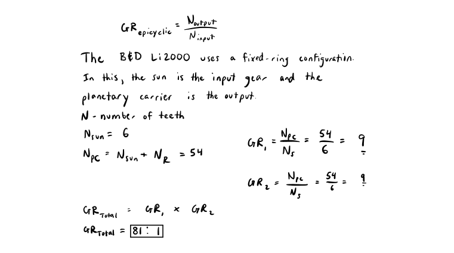Pitch Diameter of Planetary Gear:

Pitch Diameter of Sun Gear:
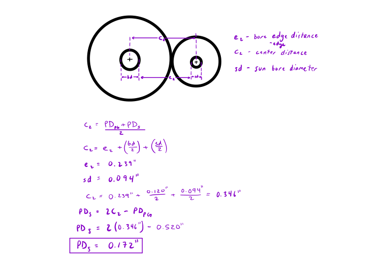Why did Black & Decker choose to utilize an Epicyclic gear train?
The advantages of epicyclic gears are easy to understand. Simply put, they are compact, low weight, and can have high power density. Because there are six planetary gears, a sun gear, a ring gear, and two planetary carriers, the load is distributed throughout the gear train. This allows the gear life to be much longer than just one gear would allow.
Graphical Analysis:
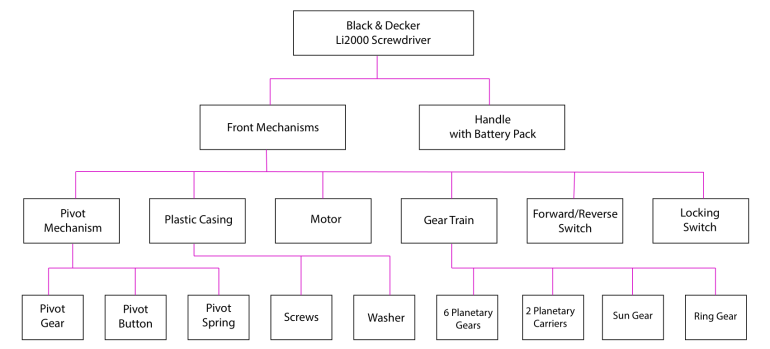CAD Drawings
Gear Box Assembly:
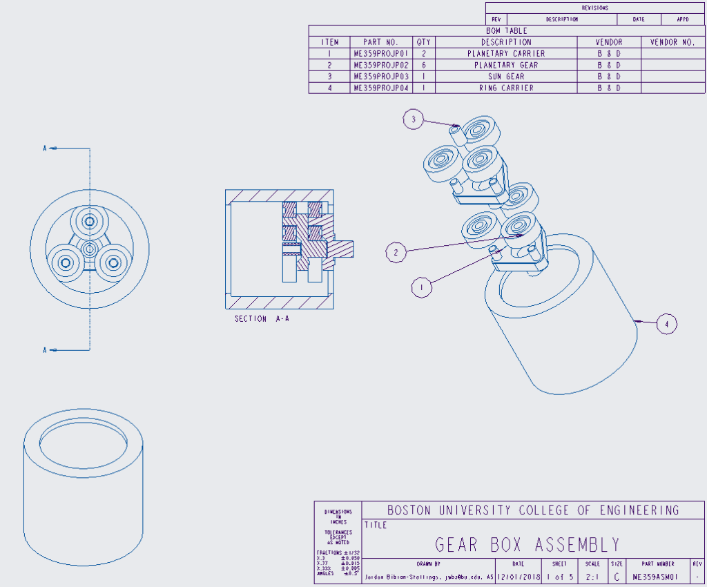Planetary Carrier:
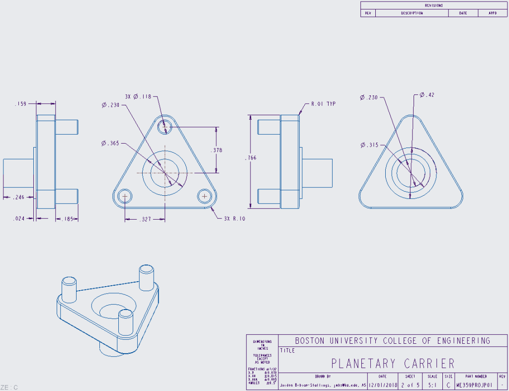Planetary Gear:
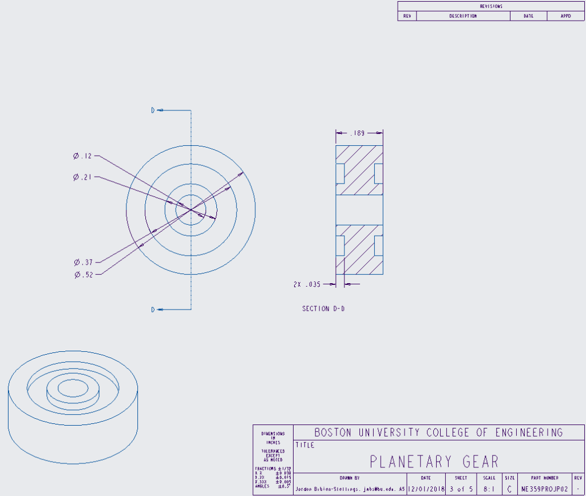Sun Gear:
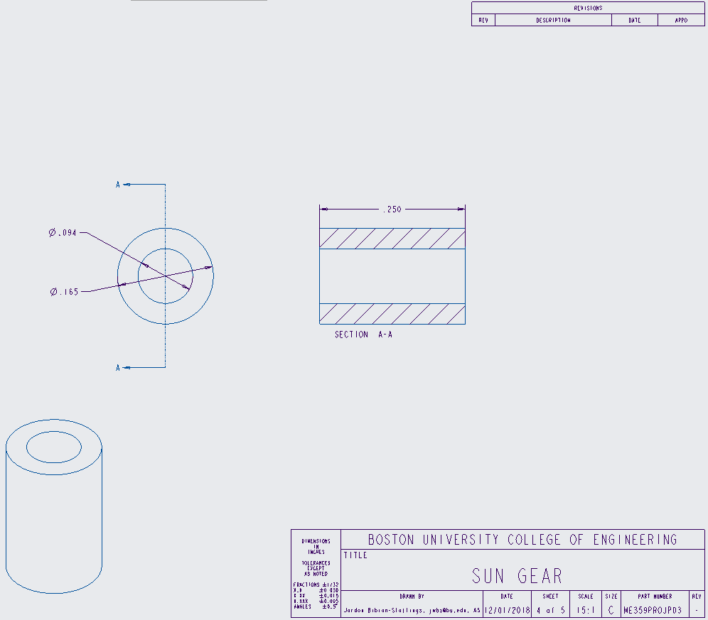Ring Gear:
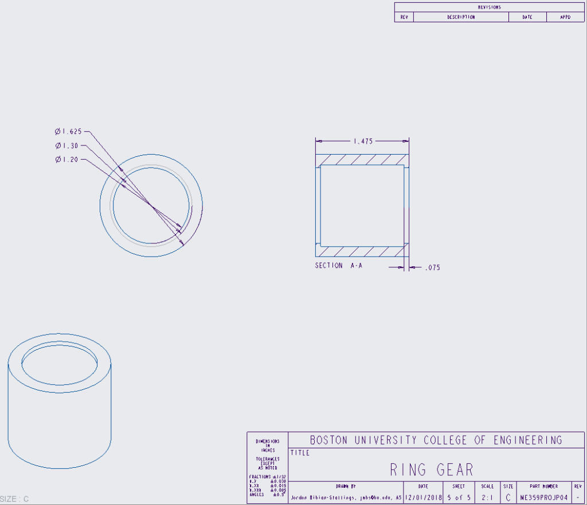DFMA - Design for Manufacturing & Assembly
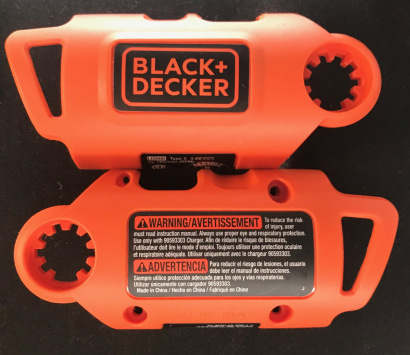DFMA was incorporated into the B&D Li2000 in many ways. The manufacturer chose to make the gear slot on the plastic casing to miss exactly one tooth in the same spot on either side of the casing. This means that the product can only be assembled in one way – the correct way. This use of DFMA means that the pivot mechanism will work every time, regardless of assembly error.
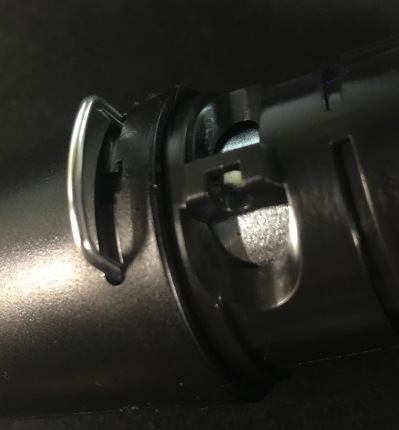Another use of DFMA for this product was that the U-pin that holds the DC motor to the gear train can only be placed on one side of the device. Additionally, there is a small slot that allows the pin to be easily removed with common items – a paper clip, flat head screw driver, or even a thumb tack.
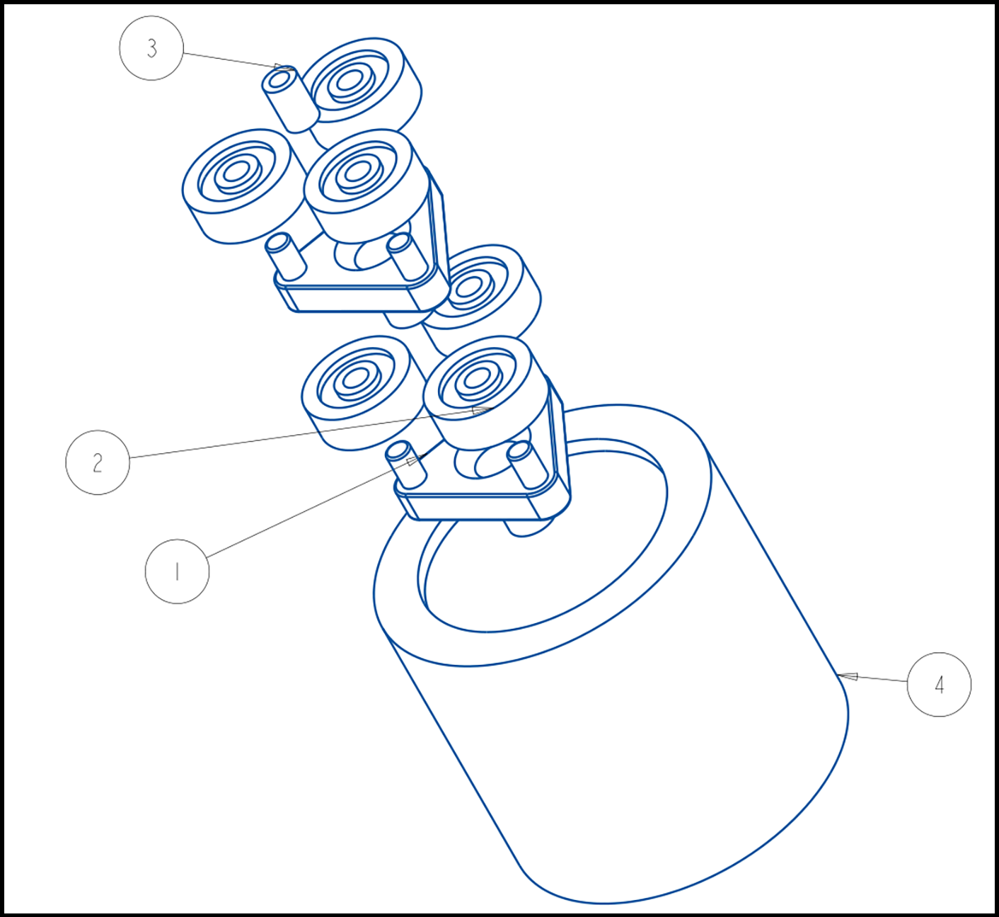Perhaps the greatest DFMA use is in the gear box. The gear box on this device is only four unique parts. This is extremely efficient when manufacturing, saves money, and because there are only ten parts in the gear box, the assembly labor required is less than a traditional gearbox may require.
The Forward/Reverse Switch
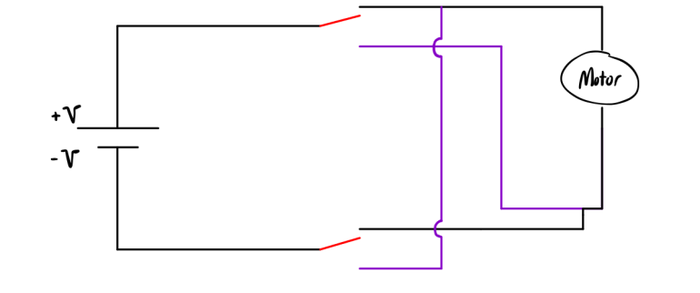The forward/reverse switch is a simple mechanism that is necessary in every electric screwdriver. The forward/reverse function works by changing the flow of electrons across the motor to change the direction the motor spins. The red colored line is the switch, the black path is the path necessary to create forward motor movement, and the purple path is the path necessary to create reverse motor movement. By moving the switch from the black to the purple path, the direction of the motor changes, and it will spin in reverse.
The Tool Handle Pivot Lock
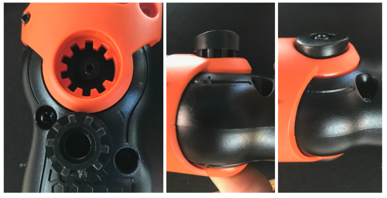The tool handle pivot lock works by having the initial position of the black gear shown above lock the movement of the screwdriver. The button on the side of the screwdriver allows the user to press the button, pushing the black gear off of the orange gear cut out on the screwdriver. This allows the user to move the screwdriver to the desired angle. When the desired angle is found, the user releases the button and the screwdriver will snap into place, deviating only slightly from the user’s desired angle.
The Power/Manual Option
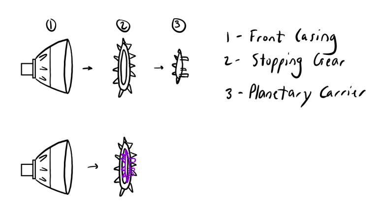The power/manual option works by locking all of the internal mechanisms. This is achieved by locking the first row of gears, preventing any movement in the system. When the front of the casing is in the electric mode, the white gear inside the casing is off of the first row of gears. When the front of the casing is in manual mode, the white gear moves towards the first row of planetary gears and pushes them into a locked position. This stops all motion and allows the user to manually crank the screwdriver as needed.
The Most Interesting Part of This Project
The most interesting thing I learned from this project are how to constructively reverse engineer a device. Before beginning to take apart the device, we were taught to identify each function of the screwdriver and analyze what it achieves and get an idea of how it works before deconstruction. Next, we were told to make a video of us taking apart the screwdriver to make sure we knew how to put it back together. By doing this, we were on a good track to not simply destroying the device. It changed the project from being a destructive process, to being purely a learning experience, where we get to keep a screwdriver at the end of the year.
I also really enjoyed the fact of the freedom and variability the students are allowed to have. After nearly completing this project, a couple of friends and I were taking a look at our design portfolios. They were each different because we focused on different aspects of the device. Learning about design for manufacturing and assembly was important for me, as my internship next summer will be focusing on prototyping devices for mass production.
Summary:
The deconstruction and reverse engineering of the Black & Decker Li2000 gave a glimpse of the future of each student’s engineering careers. Designing and redesigning until a product is perfect and takes into consideration design for manufacturing and analysis is an important part of being a mechanical engineer. This report studied the forward/reverse switch, the tool handle pivot lock, and the power/manual functions of the screwdriver. Each of these functions were relatively simple, cheap to manufacture, and easy to use by a consumer.
Conclusion:
The deconstruction of this screwdriver did not take long. However, understanding each function of this simple screwdriver took several hours of google searching and the consulting the knowledge of friends and teaching assistants. The importance of tolerances became quickly apparent as we were required to measure different distances across gears, the diameters and depths of holes, and the design of a gear box that is both compact and efficient.
Looking forward, I would like to eventually disassemble the battery case and see what is occurring inside. I would also like to design a more accurate assembly instead of using simple cylinders. Additionally, reverse engineering something more complex alongside a team of other mechanical engineers, possibly during junior or senior year, would allow students to explore more mechanical mechanisms and learn about engineering through hands-on experience and design.
References:
Planetary Gearmotors - Wordpress Planetary Gear AnalysisMachinery’s Handbook, 30th Edition by Erik Oberg